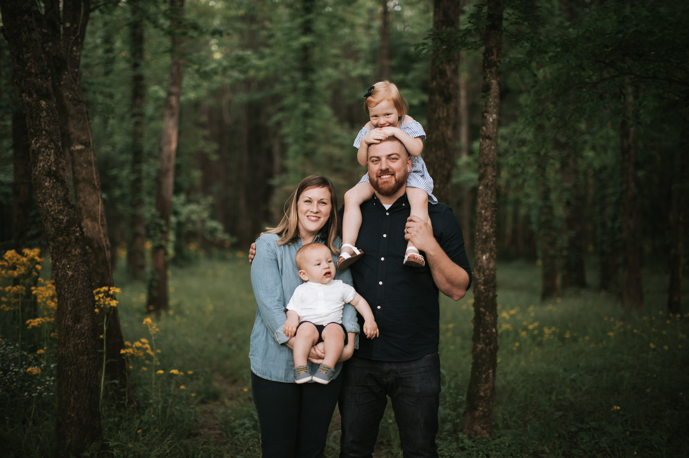

Hello, Basecamp!
This is me shooting my shot for the Senior Product Designer role you're currently hiring for.
Hey Y’all! I’m Lee.
(Here's me with my beautiful wife a kids)
I’m a software developer and all around creative problem solver from Huntsville, Alabama (Rocket City 🚀). I know this is a long shot, but here it goes.
Let me tell you why I think I’d be a great fit for this position.
Flexing my creative muscles and solving problems are two things I love doing and it seems like that’s what you’re looking for. You’re going to need someone who has a good eye for web design and usability, but doesn’t rush to overcomplicate things, I think that sounds like me. Someone who can handle design and front-end development roles while staying on track and not getting overwhelmed. Again, me.
I will also do these things without an ego. The last thing you need is someone who can’t handle rejection without feeling attacked. I am always open minded and know there’s probably always a better way to do something. You need someone who is committed to keep getting better. I am.
I like to approach design projects in the same way I approach writing music, specifically guitar parts. I know the skills and tools I have available and that the possibilities are endless, but I always keep in mind that the part has to be completed as well as “fit” the song. I won’t let anything hold back my exploration into an idea or problem, but I also won’t get carried away and fail to deliver what’s needed.
Let me tell you why I think you (Basecamp) would be a good fit for me.
The general approach to work, not just any work, but the right work. I, like everyone else I’m sure, have been a part of a work culture that seemed mindless. Portions of projects were thought through but at some point it just turned into a free-for-all. I get the feeling that Basecamp isn’t like that. I want coworkers who strive to do things the right way, nitpick the details, and actually care about the work they’re doing. These things are contagious and being in an environment like that can only lift you up and push you to do better.
Basecamp is the company I want to work for. You just seem to do things the right way, whether it’s software or people, I love your approach. I’ve been kicking myself for not applying to the Senior Programming job you were hiring for last year, so there’s no way I was gonna miss this chance.
To sum it all up...
I think we would be a great match, and I’m looking forward to the possibility of talking more about the position with you. Thanks for your time and for reading this. Keep setting the bar high and paving a way that's just better, I know you will!
Thanks for the opportunity,
Lee Brooks